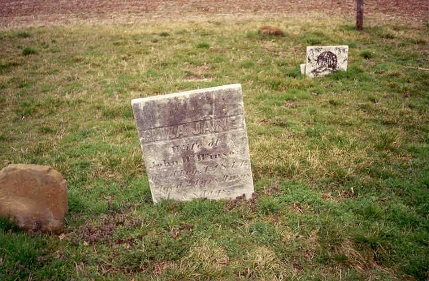
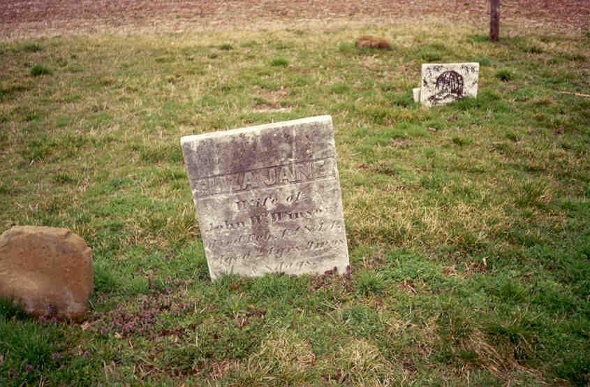
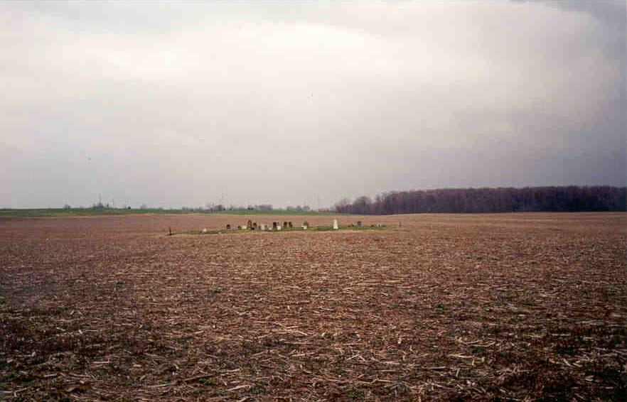

Just north of Lockbourne, Ohio, a couple hundred feet from Lockbourne Road, stands the plague cemetery. I don't know whether that's its official name--probably not--but the local legend goes that the people here died from a mysterious plague and were buried in the middle of a field for fear of contamination. More likely is that the graveyard predates the current route of Lockbourne Road. In the fall the plague cemetery is hidden from view by the cornfields.

The gravestones are largely worn away. Visible dates show that the graveyard dates from as far back as the 1830's, when these people were probably busy working on the canal. It's interesting to note that Ohio's oldest Catholic cemetery, located in Somerset, is only about as old as this one. Not many people know about this one.

 



I don't know whether this cemetery is supposed to be haunted or not, but it's certainly a creepy place, even in the daytime. With its square shape, completely lacking a fence or any kind of perimeter other than the plot of grass, and its isolation from everything around it, it really is a weirdly unique cemetery.
You'll find it, when the corn is low enough, by driving south on Lockbourne Road toward the town of Lockbourne. When you reach the stop sign at Route 317, London-Groveport Road, keep going. You'll curve left and then right, and then you'll be able to see the weirdly unique, hand-carved gravestones poking out of the ground in the center of the farm field on your left. To get to the Plague Cemetery you'll have to park near the house across the street, which belongs to the parents of a good friend of mine. Try not to disturb them. Have fun.

Back